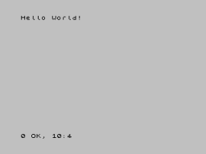

MAYBE someday you waked up from bed, and thought to yourself: "Wouldn't be cool to program for the ZX Spectrum?". After all, if you are aboard this computer stuff as long as I do, probably you are not alien to the concept of BASIC of even Machine Code.
Recently there was quite an interesting community raising on youtube, the Chibi Akumas programming channel (and the obligatory discord server). The guy not only teaches asm on the ZX Spectrum, but pretty much on every machine under the sun.
Well programming on the ZX Spectrum always felt like a loose string on my agenda, and the videos seemed comprehensive enough to give it a try (again...). But!.
The toolchain felt extremely convoluted. There was no easy way to make the computer run your neat asm code straight away. Not to mention using quite a few external libraries and a couple of programs more to bring the assembled bytecode to executable format for your emulator (or real device with everdrive...) to run.
As it usually happens, it was somehow easier to do than expected. The biggest mistake was to use a generic compiler instead of a specific ZX Spectrum compiler. After testing out pretty much anything I could found, SjASMPlus and Pasmo were the only challengers left.
I tried really hard to make Pasmo work since it's an original work from another fellow Spanish dude :p. But the compiler just straight out refused to create the executable file for the emulator to run, so I just surrended that end and moved on.
But, SjASMPlus... oh boy, it worked on the first try.
Everything can be placed inside main.asm and just place handy compiler directive at the end of the file to create a useful executable:
org $8000 ;code origin
start:
ld hl, string ;address of string
[...]
string: db "Hello World!", 0
SAVETAP "../release/tape.tap", start
;save tape file, autolaunch start address is $8000And it delivers a sweet .tap file! No external programs or anything. Now with a working executable at hand, its just a matter of feeding it to Fuse via your typical commands script:
emulator\fuse.exe --machine 48 --tape release\tape.tap -g 2xAnd sure enough:
It's still true that debugging asm code through an open source emulator is quite a step up for the average programmer student, but now setup is a breeze. And from my days learning C, the last thing you want to deal with when learning a new language are hellish toolchains.
Now let's see if I can program that game on the ZX Spectrum at last. Surely this wouldn't be the last time talking about ZX Spectrum programming around here...